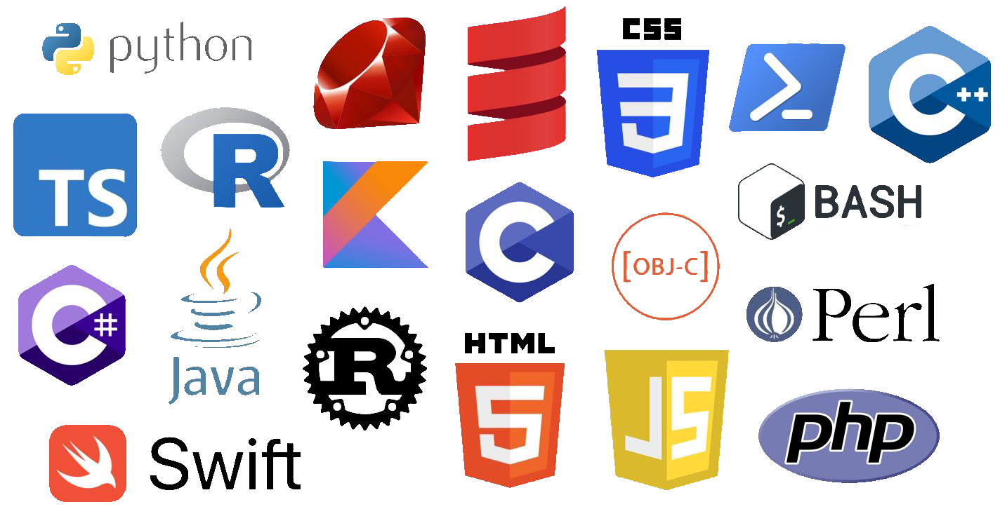
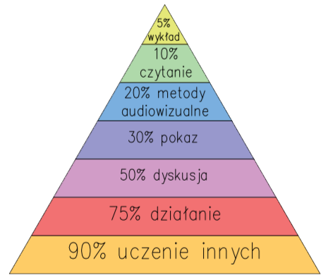

Początki programowania - od czego zacząć?
Co to wogóle jest programowanie?
Programowanie to - zgodnie z definicją - proces tworzenia programu komputerowego realizującego konkretne zadania. Wszystko jest zawarte w kodzie źródłowym, który musi zostać napisany w jednym z języków programowania. Ile jest takich języków? Tak do końca policzyć się tego chyba nie da, bo świat nowych technologii cały czas sie rozrasta, ale możemy przyjąć, że obecnie istnieje ok. 700 aktywnych języków programowania. Jednocześnie spośród nich jest “tylko” 50, w których się faktycznie pracuje. Dla poczatkujących istnienie tylu opcji może utrudnić wybór języka na początek. Przy wyborze można się kierować rankingami popularności. Są one tworzone na podstawie opinii samych programistów, ale także pracodawców. Oto jedno z wielu możliwych źródeł:
Główne jezyki programowania
700 języków, 50 aktywnie używanych. Które tak naprawdę języki to są te używane. Poniżej znajduje sie grafika która pokazuje większość z nich.
Na powyższej grafice w większosci każdy język służy do czego innego i na tym polega wszechstronność programowania. Zawsze znajdziemy odpowiedni język do tego co będziemy chcieli zrobić.
Czy nauka programowania jest trudna?
Punkt widzenia zależy od punktu siedzenia. Jeśli wiesz, że cechuje Cię rozwinięty zmysł analityczny, a praca z komputerem zawsze sprawiała Ci przyjemność, to nauka programowania przyjdzie Ci z dużą łatwością. Warto jednak wiedzieć, że kluczowym czynnikiem wpływającym efekty Twojej pracy jest poziom motywacji i chęci nauki. Być może przyda się w tym przypadku obranie konkretnego celu i jego wizualizacja przy każdej napotkanej trudności? Ciężką pracą można osiągnąć naprawdę dużo. I pamiętaj - nie ma sukcesów bez porażek. Osiągnięcie biegłości w programowaniu jest możliwe jedynie dzięki metodzie prób i błędów.
Jak długo mniej więcej trwa nauka programowania?
Średni czas przyswajania podstaw programowania oscyluje w granicach 300 godzin. To, ile godzin dziennie zdecydujesz się poświęcić na naukę, zależy głównie od Ciebie i Twoich priorytetów. Jeśli programowanie będziesz chciał potraktować w sposób jedynie hobbystyczny, a nie zawodowy, to jego nauka z pewnością zajmie Ci więcej czasu. Przyjmuje się, że do zostania młodszym programistą potrzeba mniej więcej 1-2 lat. Obecność doświadczonych kolegów z branży może natomiast nieco skrócić ten czas.
Z czego uczyć się programowania?
Bardzo padają pytania o to, jaka metoda nauki jest najskuteczniejsza do nauki programowania. Ponizej przedstawiona jest grafika która pokazuje procent z zapamiętywanej wiedzy w zależności od sposobu nauki
To było przedstawienie ogólnych sposobów nauki. Poniżej opisane są dokładniej dane metody
- Nie ucz się na pamięć
- Regularnie powtarzaj
- Praktyka czyni mistrza
Samo czytanie kodu, oglądanie tutoriali na YouTube lub słuchanie podcastów nie jest efektywną metodą nauki programowania. Dopełnieniem jest samodzielne kodowanie, umiejętność zastosowania teorii w praktyce.
- Stwórz własny projekt
Przy tworzeniu własnego projektu możesz popisać się wiedzą, a co najważniejsze przełożyć teorię na praktykę. Porozmawiaj o nim z innymi programistami, mentorami, kursantami. Na koniec wytłumacz zupełnie początkującym developerom jak tworzyłeś swój projekt, a wszystkie powyższe punkty będziesz mieć z głowy :) Pamiętaj, że projekt możesz dołączyć do swojego portfolio, co na pewno ułatwi Ci znalezienie pierwszej pracy w IT.
- Zaprzyjaźnij się z gumową kaczuszką
To sposób znany już przez najstarszych programistów i nadal się sprawdza. Potrzebujesz do tego zwykłej gumowej kaczuszki. Czytając kod szukaj błędów, a gdy je znajdziesz wytłumacz je kaczce. Ta metoda opiera się na mówieniu na głos, dzięki temu uaktywniają się inne obszary mózgu niż podczas pracy w ciszy. Łatwo też w ten sposób sprawdzisz swoje umiejętności - możesz uznać, że umiesz jakąś część materiału, jeśli potrafisz wyjaśnić ją gumowej kaczuszce.
Rozwój
Programowanie jest jak pisanie i czytanie, a rewolucja cyfrowa od dawna jest już faktem. Otaczają nas urządzenia, aplikacje, kody, które unoszą się dosłownie w powietrzu (Wi-fi, Bluetooth). Bardzo ważne jest to że branża IT cały czas się rozwija. A zatem jeżeli ktoś do niej dołączy nie ma wyjścia i musi się rozwijać wraz z nią
Branża IT
O tym, że sektor nowych technologii cały czas cierpi na niedobór specjalistów, powszechnie wiadomo. Branża IT szuka jednak nie tylko programistów, ale całej rzeszy innego rodzaju ekspertów, np. testerów oprogramowania, specjalistów ds. cyberbezpieczeństwa, data engineerów czy data scientistów. Jeszcze kilka lat temu zagraniczne organizacje nie były otwarte na współprace z pracowniki zza granicy, a teraz same szukają pracowników w Polsce lub starają się pozyskać partnera biznesowego w postaci firmy, która jest w stanie dostarczyć wymagane zasoby.